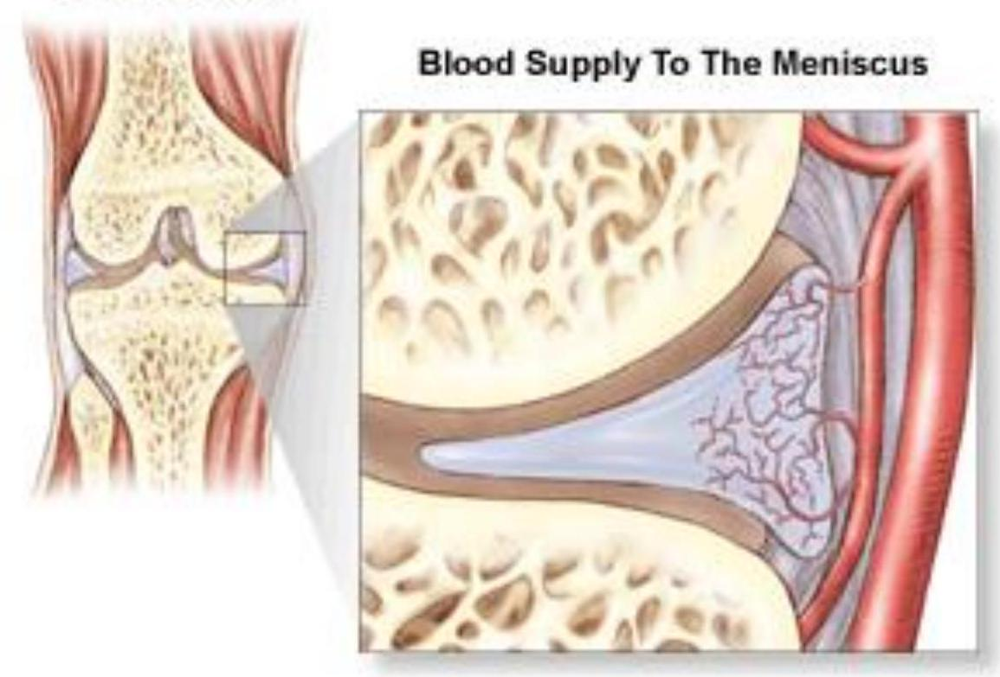
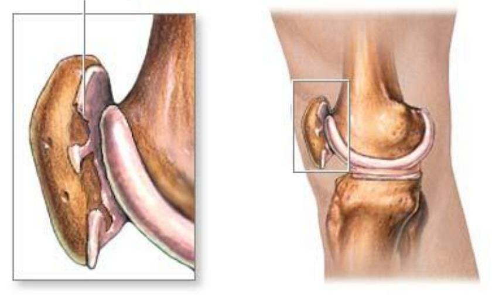

Relevant Anatomy of Knee and Leg
Relevant Anatomy of Knee and Leg
Lecture notes
Edited
By
Dr Paul Odula

BSc(Anat), MBChB(Uon), MMed(Muk), FCS(ECSA), Phd.
Outline for Knee
- Properties
- Bursae- How many?
- Surface anatomy
- Movements and Alignment
- Capsular, intra &extra capsular structures
- Clinical anatomy

Introduction
- largest & most complex joint of the body
- Patients commonly presents knee pain/ swelling/ deformity/ instability or any of the above combinations.
- Injured more frequently than any other joint
- Vulnerable to injury in practically all activities.
- Stability depends almost entirely on its associated ligaments and muscles
Properties of the Knee Joint
Weight bearing (fixed) - foot in contact with ground and the limb is supporting body weight
- Femur moves on a fixed tibia- Deep knee bends
Non Weight bearing (free) - foot free of ground and the limb is unable to support weight of body
- Tibia free to move on a fixed femur
Bursae-Ant, ant & med
- Prepatellar- superficial to the patella/ housemaid's knee
- Subcut.Infrapatellar- superficial to the lower part of the tuberosity of the tibia/Clergyman's
- Deep Infrapatellar- Deep to the ligamentum; swelling not pronounced
- Suprapatellar- Supported by the Articularis genu muscle during knee movements
Bursae- Lateral
- Deep to lateral head of the Gastrocnemius (GN) (may communicate with joint)
- between the fibular collateral ligament and the tendon of the Biceps;
- between the fibular collateral ligament and the tendon of the Popliteus
- Popliteus bursa- between the lateral condyle of the tibia and tendon of the Popliteus
Bursae- Medial superficial

- GN bursa-Deep to medial head of the GN
- Semimembranosus (SM) bursa- between the tendon of the (SM) and medial head of GN. Freq. a prolongation of the GN bursa (often communicates with the joint)
- Occasionally, bursa between the tendon of the (SM) the tendon of Semitendinosus (ST)
Bursae- Medial superficial and deep
Classification

Classification- complex & Compound
Knee Anatomy
- The Knee Joint is the largest & complex joint in the body .
- It consists of 3 Joints:
- Medial Condylar Joint : Between the medial condyle "of the femur" & the medial condyle "of the tibia" .
- Latral Condylar Joint : Between the lateral condyle "of the femur" & the lateral condyle "of the tibia" .
- Patellofemoral Joint : Between the patella & the patellar surface of the femur.
- The fibula is NOT directly involved in the joint .
Surface anatomy
- Slight gap on each side of the corresponding to space between femoral and tibial condyles
- The joint lies deep to the apex of the patellar
- The articular capsule lies very superficial along the depressions seen on either side of the patellar ligt.
Femoral condyles


Central portions of the medial and lateral facets articulate with the condyles of the femur,
While their peripheral portions support the menisci of the knee-joint
Between the articular facets, is the intercondyloid eminence (spine of
Intercondyloid eminence tibia),
Spine is the only bony stability factor which prevents sideways gliding of femur onto the tibia.
Patellofemoral joint
- Articulation between the femur and patella is a plane joint where the patella glides on the femoral trochlea
- Vastus medialis is indispensible to the stability of the patellar
- Forces in this joint vary with activity
Q angle
Determining Q-Angle
A measure of the axis of pull of the quadriceps tendon & that of the ligament of the patella.
- Normal AlignmentSlight valgus position

Q angle

- Somewhat greater in females than males. The normal Q angle is < 20deg in men; 25deg in women.
- A greater than normal means the patella will track in a lateral direction rubbing against the lateral femoral condyle causing Patella pain
Capsule- 4 special features
- Anterior- Deficient; Replaced by patella and ligamentum patella
- Antero-Superior- Capsule perforates, when the infant walks, to communicate with the suprapatellar bursa
- Postero-lat- Gap for passage of tendon of popliteus
- Posterior- Occasional gaps for other bursae
Synovial Membrane
- largest in the body.
- Lines the capsule except posteriorly where it is reflected anteriorly by the cruciate ligts, to form a common vascular invagination
- Deficient anteriorly
- Superiorly prolonged for 5 cm beneath the Quadriceps femoris muscle to form the suprapatellar bursa.
Ligaments
- Ligamentum patellae
- Tibial (MCL) and fibular(LCL) collateral
- Oblique and arcuate popliteal
- Anterior and posterior cruciate
- Medial and lateral menisci
- Transverse and coronary
- Ant. and post menisco-femoral
- Patellomeniscal & Patellofemoral(R&L)
Ligaments- Stability role
- The cruciate ligaments enable the knee to both roll and slide for maximum motion while maintaining contact and stability.
- While the collateral ligaments provide side-to-side stability.
- Medial stability is provided mainly by the MCL,
Ligaments- Lateral stability
The biceps femoris
- lateral capsule and
- the arcuate complex
iliotibial band (ITB),
popliteus tendon,
LCL, and
lateral head of the gastrocnemius muscle)
Quadriceps mechanism

- Quadriceps tendon is the central portion of the quadriceps mechanism/ common tendon
- continuous with the medial and lateral retinacula, which attach to and course along either side of the patella
- Note that the retinacula are separated from the capsule by bursae and extra capsular fat.
ligamentum patellae

- strong, flat, ligamentous band, about 3 inches long and 1 inch broad
- From rough post surf of apex of patellar to the smooth upper part of the tibial tuberosity
The tibial collateral (MCL)
- A strong, broad, flat, triangular shaped membranous strap
- Represents the degenerated tendon of ischial head of adductor magnus
- Sup- attached to the medial epicondyle of femur just below the adductor tubercle
- Inf- divides into ant/ superficial and post/ deep part. The latter form part of the "Unhappy triad" when injured

Fibular collateral (LCL)
- Strong, rounded, 2 inch long fibrous cord representing the degenerated tendon of peroneus $L$.
- attached to lateral epicondyle of the femur sup to the popliteal groove Inferiorly it splits the tendon of the Biceps femoris into two parts. Insert into the lateral side of the head of The tendon of the Popliteus separates it from the lateral meniscus.
Popliteal ligaments
Oblique
- Broad, flat, fibrous expansion ot the tendon of the Semimembranosus
popliteal artery rests upon it
Pierced by the middle genicular vessels, nerve and post div of obturator N.
- Arcuate
Derived from tendon of biceps femoris.
superficial fibres of the popliteus muscle are attached to it.
Cruciates

ANTERIOR
- Named anterior and posterior, from the position of their attachments to the tibia
- Both indispensable to A/P stability in flexion
Cruciate ligament
ACL injuries occur when bones of the leg twist in opposite directions under full body weight
prevents anterior movement of the tibia on the femur.
- checks external rotation of the tibia in flexion and to a degree checks hyperextension of the knee.
- PCL
stronger, shorter and less oblique in its direction.
- Prevents posterior displacement of tibia on femur.
Properties of menisci

- Composed of fibrocartilage and covers the sup. surface of the tibial condyles.
- Act as swabs to lubricate the joint cavity
- Adapt or increase the contact surface area (congruent) between the round femoral condyles and the relatively flat tibial plateau on the medial side, and the convex tibial plateau on the lateral side
Properties of menisci
- play an important role in load transmission
- shock absorbers for the knee by spreading compression forces from the femur over a wider area on the tibia
- Additional sensory function for better stability of the knee joint
- Flexion/ extension occur in the upper compartment
- Rotations in the lower compartment (fruit bat has no menisci nor popliteus muscle)
menisci
Cross Section

- peripheral border is thick, vascular, convex, and attached to the capsule of the joint; inner border is thin, avscular, concave, and free.
- Nourished by synovial fluid
menisci
- The upper surfaces of the menisci are concave, their lower surfaces are flat, and rest upon the head of the tibia;
- Each covers peripheral two-thirds of the articular surface of the tibia.

Radial tear
Relations of Knee
- Anterior, antero-medial & antero-lateral
- Quadriceps femoris muscles
- Ligamentum patellae complex
- Posterior, postero-medial & postero-lateral-
- Boundaries of Popliteal fossa
- Contents of Popliteal fossa.
Important subcut. relations
- Bursae; Sup.& Inf.genicular vessels- lie against condyles
- Antero-inferior- Infra-patellar plexus of nerves
- Posterior-
- Sural nerve, br of tibial
- Post. cut,. Nerve of the thigh
- Small saphenous vein
- Medial
- Great saphenous vein
- Infra-patellar branches of saphenous nerve
- Lateral- Common peroneal nerve
Movements
- the axis around which motion takes place is not a fixed one, but shifts forward during extension and backward during flexion;
- the commencement of flexion and the end of extension are accompanied by rotatory movements associated with the fixation of the limb in a position of great stability
Movements

Extension -Quadriceps.F Flexion by the Biceps femoris, Semitendinosus, and Semimembranosus, assisted by the Gracilis, Sartorius, Gastrocnemius, Popliteus, and Plantaris.
Rotation
Rotation outward is by the Biceps femoris, and rotation inward by the Popliteus, Semitendinosus and, to a slight extent, the Semimembranosus, the Sartorius, and the Gracilis.
Rotation

- The Popliteus at the commencement of the movement of flexion; by its contraction the leg is rotated inward in a fixed femur,
- or, if the tibia be fixed, the thigh is rotated outward, and the knee-joint is unlocked
Locking- principles
- Permits standing upright with little expenditure of energy in the form of muscle contraction
- Articular surface of the medial femoral condyle is longer than the surface on the lateral femoral condyle
Extension:- Pre-locking
- Moving into extension from a flexed position
- Articular surface of lateral femoral condyle stops
- Surface for articulation still exposed on medial condyle
Locking
- Medial Rotation accompanies final stages of extension
- Accommodates remainder of exposed articular surface on medial femoral condyle
- Promotes greater contact between articular surfaces of femoral and tibial condyles
- Tightens collateral and cruciate ligaments
Locking
- Locked position is brought about by medial rotation of the femur on the tibia during final stages of extension
- Promotes maximum contact between articular surfaces of femoral and tibial condyles
- Renders ligaments taut
- Ligaments maintain the joint in the stable (extended) position
KNEE JOINT 8
LOCKING OF KNEE
LOCKING
UNLOCKING
Common clinical conditions ]
- Ligament sprains and tears e.g medial, anterior cruciate,
- Football and skiing injuries tornunhappy triad;
- Degenerative conditions may lead to TKR
Chondromalacia patellae
Chondromalacia patella (runner's knee)

ADAM.
- anterior knee pain this is due to the tracking mechanism of the patella causing joint dislocation of the patella leading to roughening of the back of the patella
Osgood schlatters disease
inflammation of the tibial tuberosity
Clinical anatomy of the Leg ]
- Osteology
- Tibiofibular articulations
- Deep fascia of the leg
- Compartments and applied aspects
- Entrapment of nerves and vessels.
- Applied anatomy.
Tibia
- Significant part is subcutaneous
- poor muscle cover (surrounded by tendons).
- A rather proximally placed nutrient foramenposterior tibial artery.
- Commonly fractured bone with poor healing properties

Fibula
- Strut, key in formation & stability of AJ
- Good muscle cover - peroneal artery.
- Little contribution in weight bearing in the presence of an intact normal tibia & therefore may be sacrificed for transplant.
- It may also be used to bear weight in absence of the tibia (tibiarization of the fibula)
Joints
- Proximal tibio-fibula joint (synovialplanar)
- Middle tibio-fibula (fibrousinterosseous membrane)
- Distal tibio-fibula (fibroussyndesmosis
extremity syndesmosis (DLES).
- Key in ankle joint stability.
- Anterior and posterior tibiofibular ligaments
- Inferior transverse tibiofibular ligament
- Distal portion of the interosseous membrane
Modifications fascia cruris
- Anterior & posterior intermuscular septae that help comparmentalize the leg.
- Retinacula-
- Sup & inf.extensor retinacula
- Sup & inf peroneal retinacula
- Flexor retinaculum.
- Prevent bowstringing of tendons.
Functions of fascia cruris
- Crucial in venous return of the lower limb.
- Attachment of muscles.
- Allow muscles to function efficiently
- Efficient tendon pulls by avoiding bowstringing.
_Osteo/musculofascial compartments

Compartment syndrome
- fracture of the tibia or fibula with muscle swelling or blood clot.
- Increase in the intracompartmental pressures results in compression of arteries/veins & nerves.
- pain, pallor, paralysis, paresthesiae & pulselessness (5Ps)
- If unattended results in limb death and amputation

- The common peroneal nerve is commonly in fractures of the neck of the fibula e.g police baton injury(Policeman's nerve)
- It may also be entrappment in the fibres of peroneus longus muscle in this area.
- The ankle dorsiflexors are denervated.
Varicose veins

- Elongated, dilated & tortuous superficial veins.
- Causes
- Incompetence of the valves at either the sapheno-femoral or sapheno-popliteal junctions or both.
- Incompetent valves in perforators
- Blocked deep veins
- Their association with pregnancy is due to pressure of the gravid uterus on big veins in the Pelvis.
Which of these legs may have varicose veins?
Answer: All of the above
Venous cut down
- Where it is difficult to locate superficial veins for intravenous fluid/blood/drug administration.
- Long saphenous vein runs a finger breadth anterior to the summit of the medial malleolus.
- This vein is surgically accessed her for cannulation.
Vessels
- Artery accompanied by a pair of veins, each on either side of the artery (venae commitantes).
- The posterior tibial gives off the peroneal artery that runs along the fibula end of the membrane deep to flexor hallucis longus.
- Before its termination, the popliteal artery gives off sural branches to each head of gastrocnemius muscle. These are end arteries.
Innervation
- sciatic nerve EXCEPT two cutaneous nerves
- The posterior cutaneous nerve of the thigh & the saphenous nerve (femoral)
- This explains why loss of the sciatic nerve may indicate leg amputation.
Dermatomes
- Clinically assess the level of spinal cord segment or spinal nerve root that is compressed in disease
- Compression of L5 (part of deep peroneal nerve innervates EHL)
- loss/reduced sensation of the skin of lateral aspect of the leg
- +/- weakness in extension of the hallux.

Thank \ You \ Reconstructed anterior cruciate ligament